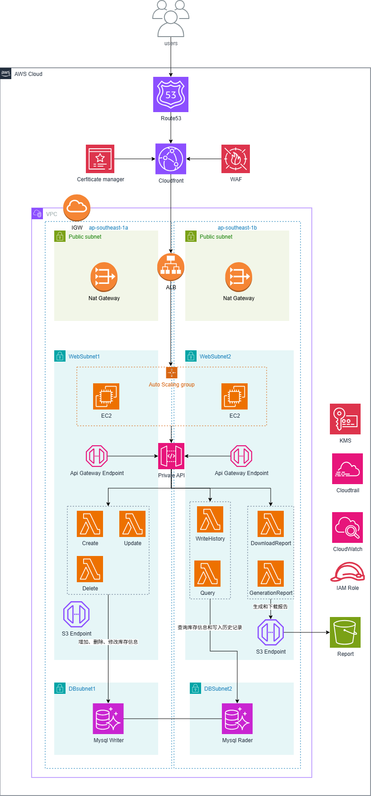

某公司 | 库存管理系统
1. 项目背景
某公司是一家中小型创新型企业，现有员工约50人，年营业额约900万美元。公司专注于旅游业务与数字化转型，业务涵盖旅游产品销售、行程规划、客户服务等多个方向，其中库存管理系统是公司运营管理的核心系统之一。
该库存管理系统致力于构建一个安全、高效、智能且可靠的旅游业务管理系统。平台整合产品库存管理、客户订单、旅游资源存储与检索功能，具备高并发处理能力，能够支持公司内部海量旅游产品数据的实时管理和处理需求，并通过顶级安全防护保障公司及客户敏感数据安全无虞。随着公司业务国际化发展，该平台需要为公司在不同地区的办公室提供统一的库存管理服务。
随着业务的不断扩展，现有本地化 IT 基础设施面临挑战：旺季性能瓶颈导致查询与下单延迟；数据量增长带来存储扩容与频繁硬件升级；缺少专业运维团队导致维护依赖外包且成本高；安全防护能力有限，存在数据泄露与中断风险。基于此，建议采用 AWS 云技术重构系统，实现弹性伸缩、安全合规与便捷运维。
2. 项目目标
- 降低访问延迟：在 AWS 弗吉尼亚北部区域部署 EC2，提高旺季处理能力并降低响应延迟，保障查询与下单流畅。
- 增强安全性：使用 AWS Shield 与 WAF 等安全服务，抵御网络与 DDoS 攻击，保护敏感数据与业务连续性。
- 提升业务可用性：借助 ELB 与多可用区 EC2 架构消除单点故障，确保库存服务在高峰与紧急订单时稳定运行。
- 优化性能与成本：通过 Auto Scaling 按需伸缩 EC2 容量，结合 Reserved Instances 与成本工具优化 TCO。
- 持续技术支持：在 AWS 与点一云支持下建立持续评估与改进机制，快速响应新需求与挑战。
3. 项目架构图

架构要点：多可用区 VPC、公私子网、Auto Scaling 的 EC2 应用层，私有 API + Lambda 处理、S3 端点、MySQL 主读写分离，前置 CloudFront/Route53/WAF，配合 CloudWatch/CloudTrail/KMS 审计与密钥管理
4. 项目成果
- 显著降低延迟：高性能 EC2 与弹性伸缩，旺季响应时间显著下降，查询与订单处理更流畅。
- 安全性增强：Shield + WAF 自动化防护，约 95% 常见攻击被拦截，内部数据安全与合规性提升。
- 高可用保障：ALB + 多可用区 EC2 确保服务连续性，旺季与突发情况下仍可稳定提供库存服务。
- 性能与成本优化：Auto Scaling 提升高并发承载并在低谷降本；Reserved Instances 等手段降低长期成本。
- 持续改进能力：建立性能评估与安全审计机制，持续优化系统以支撑业务扩展与国际化需求。